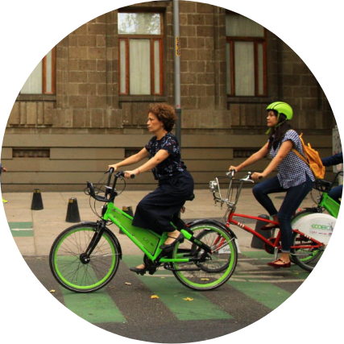

Espanol
Espanol Otro
OtroSign the pledge
To achieve this goal, we urge cities to:
- Provide more safe, inclusive spaces on the street to cycle, so that using a bicycle is the most convenient option for most trips
- Adopt policies, dedicate funding, and support educational campaigns that make cycling a reliable, convenient, cost-effective transport mode
Cycling is a tool for healthy, climate-friendly cities
The need for social distancing and changes to commuting and overall travel patterns as a result of the COVID-19 pandemic have caused cities to reshape, rethink, and renew their public spaces, streets, and public transit systems to focus more on people. The pandemic revealed inequities that have been present for decades. Shelter at home orders opened many peoples’ eyes to how few essential destinations—grocery stores or markets, hospitals, play spaces—they could actually reach by foot. Cycling effectively filled those gaps, and many cities quickly implemented temporary cycle lanes to support growing demand.
Momentum is growing
Cities around the world are on their way to becoming Cycling Cities by demonstrating how providing safe spaces to cycle generates more trips by bicycle. A Cycling City is one where everyone feels safe to cycle anywhere. That means cycling infrastructure is connected and safe. But it also means that supportive policies, like low speed limits and dedicated resources, are in place. In Cycling Cities, people choose to cycle because it is the most convenient option for most trips.
The benefits are clear
More people cycling means cleaner air; healthier communities; quieter streets; less traffic; more green space; and, above all, more freedom and connections to access people and destinations.